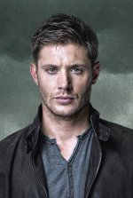

Добро пожаловать на Сверхъестественное Wiki!
Избранная статья
Дин Винчестер

"Я неподражаем! Я — Бэтмен!" (Дин Винчестер)
Этому мальчику не приходилось попусту бояться ночных теней и чудовищ под кроватью – он с детских лет прекрасно знал об их реальности и неплохо умел давать разным тварям отпор. Но что может вырасти из того, кто вместо обычных детских игр занимается охотой на сверхъественных тварей?
Читать далее
Избранная цитата
"Ты же нас знаешь – уж если портить себе жизнь, то на всю катушку." (Дин Винчестер)
Знаете ли вы, что…
На роль Сэма Винчестера был утверждён Дженсен Эклс. Однако, когда Джаред Падалеки проходил прослушивание, было решено изменить планы и использовать природное обаяние Эклса в другой роли.
Первоначально идея сериала была другой. Предполагалось, что главным героем будет газетный репортёр, расследующий загадочные городские легенды и рассказывающий о них в своей колонке. Но затем решили остановиться на сюжете о двух братьях.
Имя герою Бобби Сингеру подарил один из продюсеров сериала — Роберт Сингер.
Главные герои сериала были названы в честь Сэла Парадайза и Дина Мориарти — героев романа Джека Керуака «В дороге». Однако автору идеи Эрику Крипке не очень нравилось имя «Сэл», и он заменил его на «Сэма».
Многие эпизоды сериала носят названия известных фильмов. Например, «Детям трупы не игрушка» 1972 года, «Подозрительные лица» 1995 года, «Шоссе 666» 2001 года, «О, где же ты, брат?» 2000 года.
Также названия некоторым сериям дали известные песни. В том числе «In My Time of Dying», «What Is And What Should Never Be», «The Houses of the Holy» британской рок-группы Led Zeppelin, «Hollywood Babylon» американской группы The Misfits, «Born Under a Bad Sign» блюзмена Альберта Кинга, «My Heart Will Go On» певицы Селин Дион.